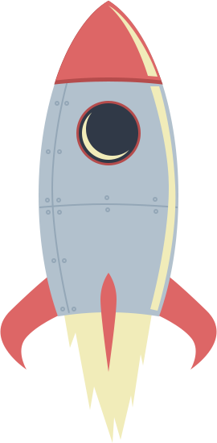
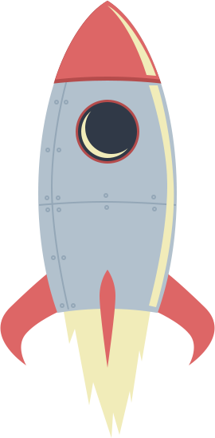

Welcome to Outer Space
NASA just made it easier to catch a glimpse of the International Space Station — the largest manmade structure in space — as it soars across the night sky. The best part: no telescope required.
The space agency has launched a new free service called "Spot the Station" that allows observers to sign up for e-mail alerts or text messages whenever the space station may be visible overhead, weather permitting. The messages, which will be sent out a few hours before the actual sighting opportunity, are tailored for an observer's location based on their home country, state and city, NASA officials explained in a statement.
As the third brightest object in the sky the space station is easy to see if you know where and when to look for it.